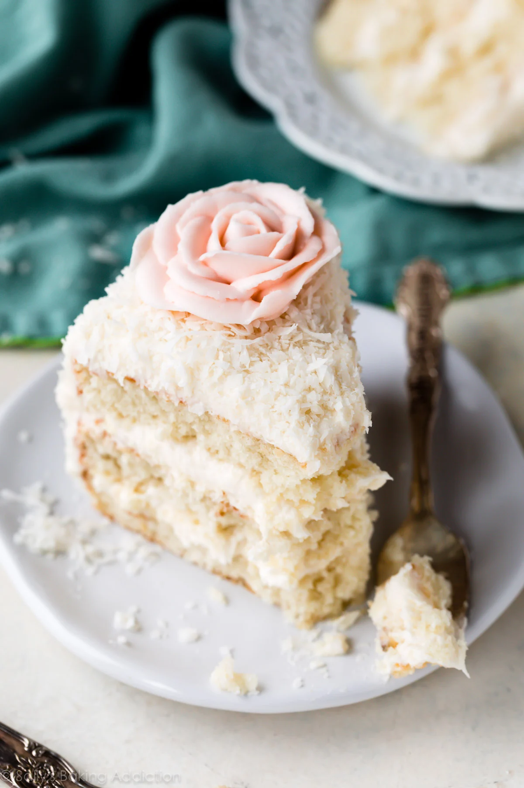
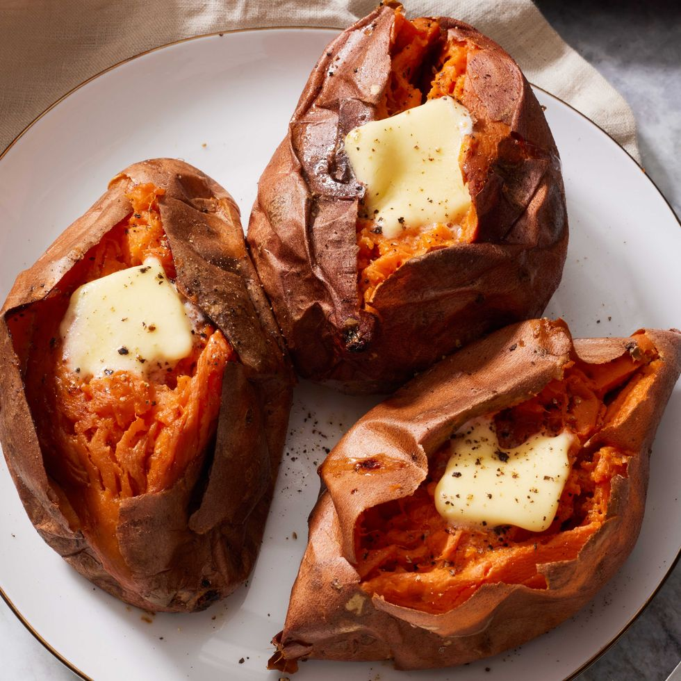

LEMON BLUEBERRY COOKIE
This is a light cookie made with simplist ingredients.
YIELDS:20 serving(s)PREP TIME:15 minsTOTAL TIME:45 mins
CAL/SERV:196
Ingredients
FOR THE COOKIES
• 1 c. granulated sugar
• 1/2 c. (1 stick) butter, softened
• 4 oz. cream cheese, softened
• 1 large egg
• 1 tbsp. lemon juice
• 1 tbsp. lemon zest
• 2 1/2 c. all-purpose flour
• 1 tsp. baking soda
• 2 tsp. cornstarch
• 1/4 tsp. Kosher salt
• 2 c. Blueberries
FOR THE LEMON GLAZE
• 1 c.powdered sugar
• 1 tbsp. cream
• 1 tbsp. lemon juice
• Zest of 1 lemon
Directions
1. Step 1 Make cookies: Preheat oven to 350°. Line two baking sheets with parchment paper. In a large bowl, cream together sugar, butter, and cream cheese until fluffy. Scrape down sides, then add egg, lemon juice and zest. Beat until combined.
2. Step 2 In a medium bowl, combine flour, baking soda, cornstarch, and salt. Beat into the wet mixture just until combined. Gently fold in blueberries.
3. Step 3 Using a large cookie scoop, scoop dough (about 3 tbsp) onto prepared baking sheets. Bake until cookies are set and edges turn lightly golden, 10 to 15 minutes. Let cool.
4. Step 4 Meanwhile, make glaze: Whisk together powdered sugar, cream, lemon juice and zest. Drizzle on top of cookies.
Place Recipe here.
Peach Burrate Caprese
Peach Burrata Caprese
YIELDS: 2 serving(s) PREP TIME: 10 mins
TOTAL TIME: 25 mins
CAL/SERV: 914
Ingredients
FOR THE HOT HONEY
1/2 c. honey
2 tsp. ground cayenne
FOR THE CANDIED PECANS
1/4 c. granulated sugar
2/3 c. toasted pecans
Kosher salt
Freshly ground black pepper
FOR THE CAPRESE
3/4 c. basil leaves
3 medium peaches, sliced
1 (4-oz.) round burrata
Lemon wedge
Fresh mint leaves, for garnish
Extra-virgin olive oil, for serving
Step 1
Make the hot honey: In a small pot over medium-low heat, bring honey to a simmer. Add in cayenne and stir to combine. Reduce heat to low and continue cooking until honey bubbles vigorously, about 3 minutes more. Remove from heat and let cool completely.
Step 2
Make the candied pecans: Line a baking sheet with parchment. In a large pot over low heat, pour sugar into an even layer and heat until mostly melted. Add pecans and a pinch of salt and pepper, then stir constantly until melted sugar coats pecans evenly. Once caramel begins to smoke, immediately remove from heat and transfer pecans to baking sheet. Carefully, use two nonstick spatulas to separate pecans. Let cool completely.
Step 3
Assemble the salad: In a medium serving platter, spread basil into an even layer. Place peaches around the platter, then squeeze lemon all over peaches. Place burrata in the center and use a knife to slice open.
Step 4
Sprinkle candied pecans all over, then drizzle with hot honey and olive oil. Garnish with mint before serving.
Place RECIPE HERE

Coconut Cake
Coconut Cake
Ingredients
• 2 and 1/2 cups (285g) cake flour (spooned & leveled)
• 2 teaspoons baking powder
• 1/2 teaspoon baking soda
• 1 teaspoon salt
• 3/4 cup (12 Tbsp; 170g) unsalted butter, softened to room temperature
• 1 and 2/3 cups (330g) granulated sugar
• 5 large egg whites, at room temperature
• 1/2 cup (120g) sour cream, at room temperature
• 2 teaspoons pure vanilla extract
• 1 teaspoon coconut extract
• 1 cup (240ml) unsweetened canned coconut milk, at room temperature*
• 1 cup (80g) sweetened shredded coconut
Coconut Cream Cheese Buttercream
• 1 cup (16 Tbsp; 226g) unsalted butter, softened to room temperature
. 8 ounces (226g) full-fat brick cream cheese, softened to room temperature*
• 5 cups (600g) confectioners’ sugar
• 2 Tablespoons (30ml) canned coconut milk
• 1/2 teaspoon pure vanilla extract
• 1/2 teaspoon coconut extract
• 1/8 teaspoon salt
• 2 cups (160g) sweetened shredded coconut
Cook Mode Prevent your screen from going dark
________________________________________
Instructions
1. Preheat oven to 350°F (177°C). Grease three 9-inch cake pans, line with parchment paper rounds, then grease the parchment paper. Parchment paper helps the cakes seamlessly release from the pans. (If it’s helpful, see this parchment paper rounds for cakes video & post.)
2. Make the cake: Whisk the cake flour, baking powder, baking soda, and salt together. Set aside.
3. Using a handheld or stand mixer fitted with a paddle or whisk attachment, beat the butter and sugar together on medium-high speed until smooth and creamy, about 2 minutes. Scrape down the sides and up the bottom of the bowl with a rubber spatula as needed. Beat in the egg whites until combined, then add the sour cream, vanilla extract, and coconut extract. Beat until combined. Mixture will look curdled as a result of the varying textures and solid butter combining. Scrape down the sides and up the bottom of the bowl as needed. With the mixer on low speed, slowly add the dry ingredients and coconut milk. Beat on low speed until combined, then add the shredded coconut. Whisk it all by hand to make sure there are no butter lumps at the bottom of the bowl. The batter will be slightly thick.
4. Pour batter evenly into cake pans. Weigh them to ensure accuracy, if desired. Bake for 21–23 minutes or until the cakes are baked through. To test for doneness, insert a toothpick into the center of the cake. If it comes out clean, it’s done. Allow cakes to cool completely in the pans set on a wire rack. The cakes must be completely cool before frosting and assembling.
5. Make the frosting: In a large bowl using a handheld or stand mixer fitted with a whisk or paddle attachment, beat the butter and cream cheese together on medium speed until creamy and smooth, about 2 minutes. Add confectioners’ sugar, coconut milk, vanilla extract, coconut extract, and salt with the mixer running on low. Increase to high speed and beat for 3 minutes. Add more confectioners’ sugar if frosting is too thin, more coconut milk if frosting is too thick, or an extra pinch of salt if frosting is too sweet.
6. Assemble and decorate: Using a large serrated knife, slice a thin layer off the tops of the cakes to create a flat surface. Discard (or crumble over ice cream!). Place 1 cake layer on your cake stand, cake turntable, or serving plate. Evenly cover the top with about 1 and 1/2 cups of frosting. Top with second cake layer and evenly cover the top with about 1 and 1/2 cups of frosting. Top with the third cake layer. Spread the remaining frosting all over the top and sides. I use and recommend an icing spatula to apply the frosting and a bench scraper to smooth the sides. Sprinkle coconut on top of the cake and apply it to the sides. This can get a little messy and you can watch me do it in the video tutorial. See blog post above about buttercream rose decoration.
7. Refrigerate cake for at least 20 minutes before slicing. This helps the cake hold its shape when cutting, though it’s still a pretty fluffy cake!
8. Cover leftover cake tightly and store in the refrigerator for up to 5 days.
Notes
1. Make Ahead & Freezing Instructions: The cake layers can be baked, cooled, and covered tightly at room temperature overnight. Likewise, the frosting can be prepared, then covered and refrigerated overnight. When ready to decorate, let the frosting sit at room temperature to slightly soften for about 15 minutes, then give it one more mix with the mixer on medium speed for about 1 minute before frosting cake. Frosted cake or unfrosted cake layers can be frozen for up to 2–3 months. Thaw overnight in the refrigerator and bring to room temperature before decorating/serving.
2. Special Tools (affiliate links): 9-Inch Cake Pans | Electric Mixer (Handheld or Stand Mixer) | Glass Mixing Bowls | Whisk | Cake Stand or Cake Turntable | Icing Spatula | Bench Scraper | Cake Carrier (for storing)
3. Cake Flour: For the best results, I strongly recommend cake flour. You can find cake flour in the baking aisle and I have many more recipes using it. If you can’t find it, try making this cake flour substitute.
4. Egg Whites: Egg whites (no yolks) are KEY to the cake’s fluffy texture. For best success, I recommend using fresh eggs instead of carton egg whites. (Using an egg separator is really handy!) Here are all my recipes using leftover egg yolks. Success tip: Eggs separate much easier when they’re cold.
5. Canned Coconut Milk: Canned coconut milk is a cooking ingredient, not a beverage. It is usually unsweetened, so make sure you’re using unsweetened. It’s usually found in the grocery store near the Thai food products. Do not use refrigerated carton coconut milk beverage. You need 1 cup for the cake, not the entire can. You use 2 more Tablespoons in the frosting.
6. Sweetened Shredded Coconut: I recommend using sweetened shredded/flaked coconut. It’s moister than unsweetened coconut and that makes a big difference in the cake’s texture. If desired, pulse the coconut shreds in a food processor to chop them up so they aren’t as long inside and outside of the cake. Chopping the coconut is optional.
7. Cream Cheese: Use brick cream cheese, not cream cheese spread. If desired, you can use this vanilla buttercream instead (no cream cheese). Use canned coconut milk instead of milk and add 1/2 teaspoon coconut extract.
8. 9×13-Inch Sheet Cake: Simply pour the batter into a greased and lightly floured 9×13-inch pan and bake for 40 minutes or until a toothpick inserted in the center comes out clean.
9. 2-Layer Cake: Prepare two 9-inch cake pans in step 1. Divide batter between pans and bake for 24–26 minutes or until a toothpick inserted in the center comes out clean.
10. Bundt Cake: This cake batter will fit into a greased 10-cup or larger Bundt pan. I’m unsure of the exact bake time (likely around an hour); use a toothpick to test for doneness. Same oven temperature.
11. Cupcakes: Fill cupcake liners 2/3 full. Bake at 350°F (177°C) for 19–21 minutes. Yields about 2–3 dozen. Or try my vanilla cupcakes recipe and substitute canned coconut milk for whole milk, 1/2 teaspoon coconut extract for the vanilla bean, and add 3/4 cup (60g) of sweetened shredded coconut.
12. Why is everything at room temperature? All refrigerated items should be at room temperature so the batter mixes together easily and evenly. Read more about the importance of room temperature ingredients.
Put Recipe Here
Additional Recipe

Sweet Potatoe
YIELDS: 4 PREP TIME: 5 mins TOTAL TIME: 55 mins
Ingredients
4 sweet potatoes, scrubbed clean
Olive oil, optional
4 tbsp. butter
Kosher salt
Freshly ground black pepper
Directions
Step 1
Preheat oven to 425º. On a baking sheet lined with aluminum foil, prick sweet potatoes all over with a fork. Rub the outsides with a small amount of olive oil if you intend to eat the skins.
Step 2
Bake until tender, 45 to 50 minutes.
Step 3
Let cool, then split the tops open with a knife and top with a pat of butter.
Step 4
Season with salt and pepper before serving.arnish with mint before serving.Place Recipe HERE
Do you need any other information about good recipes?
Please fill the following form. We will definitely connect with you.